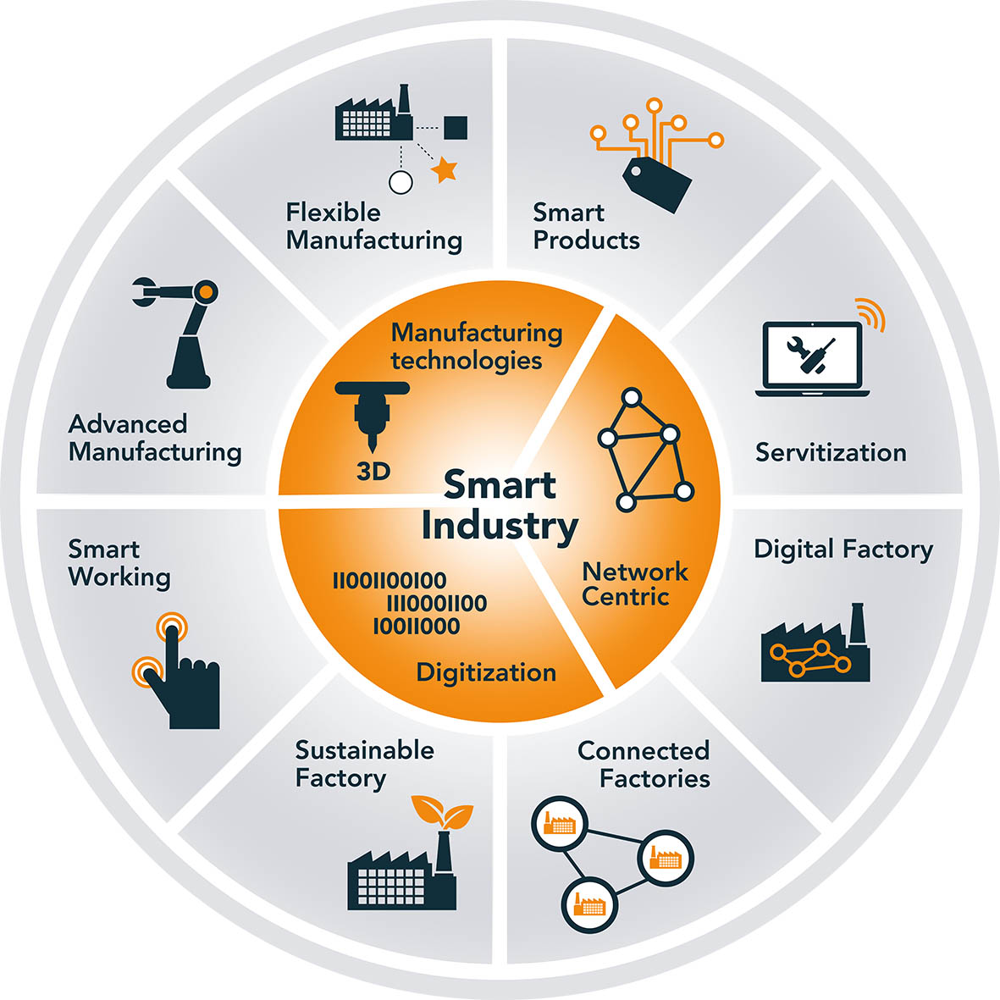
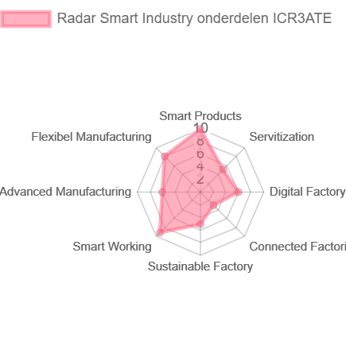

Op deze pagina zal de volwassenheid van ICR3ATE met betrekking tot Smart Industry onderzocht worden aan de hand van het Smart Industry wiel. Op het einde zal er worden gereflecteerd op de diepere betekenis voor de organisatie en/ of haar keten.
Introductie
De mate van volwassenheid van een organisatie met betrekking tot Smart Industry kan mede worden
bepaald door het Smart Industry wiel (hieronder te zien). ICR3ATE is een research & development bedrijf dat gespecialiseerd is in
het bouwen van prototypes en rapid application development. De focus hierbij is het maken van slimme producten/prototypes door bijvoorbeeld het gebruik
van IoT producten. In de tekst hieronder zal de volwassenheid van ICR3ATE m.b.t. Smart industry verder worden uitgewerkt.

Figuur 1. Smart Industry wiel. Overgenomen uit Onderzoeksagenda voor HTSM en ICT
en routekaart voor de NWA door Smartindustry.nl, 2018 (https://smartindustry.nl/downloads/a9439c/Smart-Industry-Roadmap-2018.pdf)
Mijn visie op Smart Industry
In mijn ogen is Smart Industry de sleutel tot succes nu en in de toekomst. Kijk maar eens naar wat bijna alle nieuwe succesvolle bedrijven gemeen hebben,
ze gebruiken technologische ontwikkeling in hun voordeel. Denk hierbij aan een bedrijf zoals Tesla, zij hebben de 'traditionele auto' een hele nieuwe tint gegeven.
De auto's van Tesla zijn volledig elektrisch en uitgerust met de nieuwste technologische snufjes. Terwijl traditionele autofabrikanten langzaam de overstap naar elektrisch rijden
maken, vaak eerst nog hybride modellen, heeft Tesla zich helemaal gestort op elektrisch rijden, met succes. Producten waarvan we vroeger dachten dat we het niet konden maken of zouden gebruiken,
blijken ons leven een stuk aangenamer te maken. De productiviteit van bedrijven kan enorm verbeterd worden door onderdelen van Smart Industry, denk bijvoorbeeld aan machine-learning, digitalisatie en nog duizend mogelijkheden
waar we in de toekomst nog achter moeten komen. De continue ontwikkeling van nieuwe technologische ontwikkelingen, dat is de kracht van Smart Industry!
Onderzoeksmethode
Om aan de benodigde informatie te komen om de volwassenheid met betrekking tot Smart Industry
van ICR3ATE te meten heb ik gebruik gemaakt van de volgende bronnen: medewerkers van ICR3ATE en de beschikbare
informatie op de website van ICR3ATE (www.icr3ate.nl).
Daarnaast heb ik natuurlijk gebruik gemaakt van de toegereikte informatie vanuit de minor Smart Industry en de beschikbare documentatie op zowel BKmoodle, Google Scholar en het reguliere Google.
Volwassenheid ICR3ATE
Zoals te zien is op het Smart Industry wiel zijn er 8 verschillende facetten gebonden aan Smart Industry. Elk onderdeel zal worden behandeld
en beoordeeld op een schaal van 1 tot 10. Hierdoor kan op het einde een overzicht weergegeven worden waarop precies te zien is waar ICR3ATE goed op scoort
en waar nog ontwikkeling mogelijk is.
Smart products
Zoals ik net al benoemd heb is ICR3ATE onder andere bezig met het ontwerpen en creëren van prototypes aan de hand van
IoT producten. IoT producten zijn typisch voorbeelden van Smart products. ICR3ATE is op dit moment bijvoorbeeld ook bezig om
IoT producten te koppelen aan een blockchain omgeving zodat de uitstoot van boeren beter in kaart gebracht kunnen worden. Met dit project
kunnen overheden beter toezicht houden en krijgt de boer meer ruimte om gebruik te maken van zijn ondernemersvrijheid zolang die maar binnen de
uitstoot normen blijft. Vanwege het vele gebruik van Smart Products en de innovatieve manier waarmee ze dit gebruiken scoort ICR3ATE 10 uit 10 op dit vlak.
Servitization
Op dit moment bied ICR3ATE nog geen services aan in bijvoorbeeld de vorm van een abonnement. Echter is ICR3ATE wel met enkele projecten bezig waar dit in
de toekomst wel mee zou kunnen. Denk hierbij aan het bij Smart Products genoemde project waarbij ICR3ATE de service kan beheren waar abonnement kosten aan verbonden
kunnen zitten. Daarnaast is ICR3ATE bezig met een project met Univé om doormiddel van slimme sensoren schoorsteen branden te voorkomen. Hier zou ICR3ATE ook weer een abonnement
functie aanvast kunnen maken. Er zijn dus genoeg mogelijkheden voor ICR3ATE om dit in de toekomst te gaan doen, daarom krijgt ICR3ATE 5 uit 10 punten.
Digital factory
ICR3ATE is niet echt een productie bedrijf dat op grote schaal producten produceert. Hierdoor is er geen sprake van een echte fabriek. Echter gebruikt ICR3ATE wel digitale moddelering
om te kijken of iets in de praktijk zal werken op het moment dat er een prototype gebouwd wordt. Echter zijn ze bij ICR3ATE wel praktisch en willen ze graag snel aan de slag om een eerste
prototype te ontwikkelen, ze noemen zichzelf dan ook denkende doeners (ICR3ATE, z.d.-b). Hierdoor valt er nog wel wat te winnen om dingen eerst digitaal te moddeleren. Echter valt er ook wat te zeggen voor het zo snel mogelijk maken van een prototype
zodat je snel ervaring kan opdoen met het product. Aangezien ICR3ATE wel gebruik maakt van het begrip Digital Factory maar ook vaak snel aan de slag gaat scoort ICR3ATE 6 uit 10 punten op dit onderdeel.
Connected Factories
Aangezien ICR3ATE een zeer beperkt aantal producten produceert is het lastig voor ze om aan Connected Factories te doen. Echter is ICR3ATE wel erg goed in het verkrijgen van data uit machines.
Dit komt omdat ICR3ATE veel prototypes maakt met IoT producten erin verwerkt waardoor deze in verbinding staan met het internet. Hierdoor is het mogelijk relatief makkelijk informatie uit deze producten/machines te halen.
Aangezien dit onderdeel is van Connected Factories (TNO, z.d.) scoort ICR3ATE 3 uit 10 op dit onderdeel.
Sustainable factory
ICR3ATE is niet specifiek bezig met duurzaamheid binnen het eigen productieproces. Echter wordt er wel geprobeer verspilling zo veel mogelijk tegen te gaan.
ICR3ATE is wel bezig met het milieu en duurzaamheid tijdens het creëren van prototypes. Denk hierbij aan het meten van de uitstoot van boeren zodat zij niet teveel uitstoten
en het tegengaan van schoorsteen branden. Door het ontwikkelen en uitwerken van prototypes worden grootschalige productie fouten voorkomen, dit is onderdeel van Sustainable Factory (Smart Industry, z.d.).
ICR3ATE scoort een 5 uit 10 omdat de dingen die ze doen op dit gebied goed doen maar niet het volledige raakvlak hebben met dit onderdeel.
Smart Working
ICR3ATE bevind zich in de snel ontwikkelende technologie sector, hierdoor is leer- en aanpassingsvermogen erg belangrijk. Leer- en aanpassingsvermogen zijn pijlers van het begrip Smart Working. Werken op afstand, zoals via Teams, Zoom of Google Meet behoort ook tot Smart Working (McEwan, 2016).
McEwan (2016) zegt het volgende over Smart Working: 'Managing and optimising both the physical and philosophical work environment to release energy that drives business performance'.
Binnen ICR3ATE heerst een cultuur van leren, grenzen verleggen en innoveren. Deze waardes sluiten naadloos aan op de pijlers leer- en aanpassingsvermogen.
Hierdoor scoort ICR3ATE 9 uit 10 op Smart Working. De reden dat er niet voor 10 gekozen wordt is omdat er altijd ruimte is voor verbetering.
Advanced Manufacturing
Da Silva et al. (2020) zeggen het volgende over Advanced Manufacturing:'The digital revolution in manufacturing has moved from
single technologies to integrated systems. Industry 4.0
describes the fourth industrial revolution, which leads to an
intelligent, connected and decentralized production, standing
for a new level of organization and regulation of a product’s
entire value chain over its life cycle.'
ICR3ATE is zelf erg bezig met intelligente en slimme apparaten ontwikkelen. Het daadwerkelijke productieproces van de prototypes is zo klein dat
er weinig ruimte is voor dit soort digitalisatie mocht het überhaupt rendabel zijn om dit te implementeren.
ICR3ATE is meer bezig met het ontwikkelen van dit soort Advanced Manufacturing machines dan dat ze het zelf gebruiken.
ICR3ATE kan wel gebruik maken van de mogelijkheden van de machines die ze ontwikkelen door naar de gegevens te kijken die de machines generen.
Hierdoor kunnen de apparaten/machines geoptimaliseerd worden. ICR3ATE scoort op dit vlak een 6 uit 10.
Flexible Manufacturing
Door enorme concurrentie op zowel de nationale als internationale markt moeten bedrijven constant omgaan met snel veranderende technologiën.
Klanten worden veeleisenderen de levens cyclus van producten wordt korter, dit vereist flexibiliteit van producenten. Een producent moet flexibel omgaan met de veranderende vraag,
variëteit van producten en succesvol nieuwe producten lanceren om concurrerend te blijven (Mahmood, Karaulova, Otto & Shevtshenko, 2017).
Aangezien ICR3ATE zich gespecialiseerd heeft in research & development loopt het als het goed is altijd voorop qua innovaties. Snel veranderende technologiën bieden
kansen voor ICR3ATE om nieuwe producten te creëren, dit is dan ook precies wat ICR3ATE doet. ICR3ATE creëert zelf prototypes maar maakt deze ook op verzoek
van bedrijven. Doordat er van deze prototypes maar enkele gemaakt worden zijn ze erg flexibel qua productieproces en producten.
ICR3ATE scoort hierdoor 8 uit 10 op Flexible Manufacturing.
Overzicht
Hieronder is een overzicht van de gescoorde punten per onderdeel te zien in een radar grafiek.

Figuur 2. Radar ICR3ATE
ICR3ATE probeert een pioneer te zijn op het gebied van innovaties en het gebruiken van IoT producten. Ze doen dit zowel uit eigen iniatief als in opdracht voor klanten. Door steeds nieuwe 'baanbrekende' oplossingen te ontwikkelen heeft ICR3ATE veel effect op de afnemers in haar keten. De producten van ICR3ATE zijn soms handige snufjes, zeer vooruitstrevend of zelfs levensreddend. ICR3ATE heeft zich namelijk bezig gehouden met het ontwikkelen van IoT sensoren die warmte in schoorstenen kan detecteren, wanneer het te warm was werd er automatisch een melding verzonden dat er kans is op een schoorsteen brand.
Tijdens het maken van prototypes probeert ICR3ATE altijd vooruitstrevend te zijn en soms zelfs meer te doen dan gevraagd wordt (ICR3ATE, z.d.-a). Hiermee laat ICR3ATE zien dat ze continu opzoek zijn naar nieuwe slimme innovaties, wat wijst op volwassenheid op het gebied van Smart Industry. Door continu bezig te zijn met slimme innovaties en nieuwe dingen leren ontwikkelt de organisatie zichzelf ook. Door dat ICR3ATE steeds ervaring opdoet bij opdrachten, prototypes en innovaties kunnen ze hun volgende werk weer naar een hoger niveau tillen. Hierdoor zal de vraag naar nieuwe technologie toenemen vanuit ICR3ATE aan haar leveranciers, zodat ze hun werk weer naar een hoger niveau kunnen tillen. Echter zullen de afnemers van ICR3ATE ook tot nieuwe inzichten komen wat er allemaal kan met slimme technologie en innovaties waardoor de vraag hiernaar mogelijk ook weer zal toenemen.
Het interessante aan ICR3ATE is dus dat ze steeds opzoek zijn naar nieuwe (toepassingen) van technologie en slimme apparaten. Hierdoor worden producten gecreërd die tot voor kort niet aan gedacht werd of zelf niet voor mogelijk geacht werden. ICR3ATE beïnvloed direct en indirect haar keten met haar werkzaamheden.
Bronnenlijst
Da Silva, E. R., Shinohara, A. C., Nielsen, C. P., De Lima, E. P., & Angelis, J. (2020). Operating Digital Manufacturing in Industry 4.0: the role of advanced manufacturing technologies. Geraadpleegd op 22 december 2020, van https://www.sciencedirect.com/science/article/pii/S2212827120306405?via%3Dihub
ICR3ATE. (z.d.-a). FAQ. Geraadpleegd op 4 januari 2021, van https://icr3ate.nl/frequently-asked-questions-faq/
ICR3ATE. (z.d.-b). Over ICR3ATE. Geraadpleegd op 22 december 2020, van https://icr3ate.nl/ons-bedrijf/
Mahmood, K., Karaulova, T., Otto, T. & Shevtshenko, E. (2017). Performance Analysis of a Flexible Manufacturing System(FMS). Geraadpleegd op 22 december 2020, van https://reader.elsevier.com/reader/sd/pii/S2212827117302706?token=4957750111033AD975785D1410FE7301C72741B6E4AEA07E509285770DECCD3B49B8BEE5C8FEB6B56F8C6DBE05F87641
McEwan, A.M. (2016). Smart Working, creating the next wave? Geraadpleegd op 22 december 2020, van https://books.google.nl/books?hl=nl&lr=&id=4WPeCwAAQBAJ&oi=fnd&pg=PP1&dq=smart+working&ots=7I_COqt3xW&sig=Lf315PAdgVutBe1rSZA8ftufmg0&redir_esc=y#v=onepage&q=smart%20working&f=false
Smart Industry. (z.d.). Duurzame fabriek (Sustainable Factory). Geraadpleegd op 22 December 2020, van https://faq.smartindustry.nl/duurzame-fabriek-sustainable-factory
Smart Industry. (2018). Onderzoeksagenda voor HTSM en ICT en routekaart voor de NWA. Geraadpleegd op 4 januari 2021, van https://smartindustry.nl/downloads/a9439c/Smart-Industry-Roadmap-2018.pdf
TNO. (z.d.). Smart and connected factory: Data gebruiken om de fabriek te verbeteren. Geraadpleegd op 22 december 2020, van https://www.tno.nl/nl/aandachtsgebieden/industrie/roadmaps/smart-industry/projecten/smart-and-connected-factory-data-gebruiken-om-fabriek-te-verbeteren/